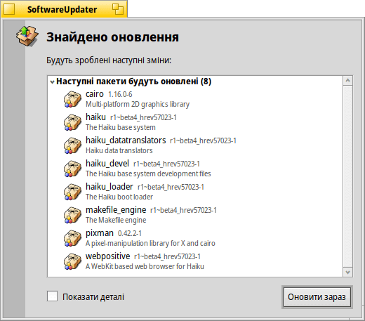

SoftwareUpdater (Оновлення ПЗ)
SoftwareUpdater (Оновлення ПЗ)
| Deskbar: | ||
| Розташування: | /boot/system/apps/SoftwareUpdater | |
| Налаштування: | ~/config/settings/SoftwareUpdater_settings |
Програма оновлення програмного забезпечення SoftwareUpdater перевіряє всі активні репозитарії (дивіться розділ Репозитарії) на наявність оновлень до встановлених пакетів, включно з системними оновленнями самої Haiku. Програма завантажує і встановлює доступні оновлення усі за один раз.
Після запуску, SoftwareUpdater перевіряє наявність оновлень для пакетів і відображає їх у списку з новою версією та коротким описом. Ви можете увімкнути опцію , щоб додати назву репозитарію для кожного пакета та показати як стару, так і нову версії пакета.
Після натискання кнопки почнеться завантаження усіх пакетів зі списку і їх подальша інсталяція.
Залежно від того, які пакети було оновлено, Вам доведеться перезагрузити Haiku, щоб фактично завершити процес оновлення. Оновлені програми зазвичай потрібно лише перезапустити, тоді як зміни у самій Haiku можуть вимагати перезагрузки системи, щоб вони набули чинності.
Кожного разу, коли пакети оновлюються, встановлюються чи видаляються (за допомогою SoftwareUpdater/HaikuDepot або в терміналі через pkgman), новий «стан системи» зберігається в /system/packages/administrative/. Це дає змогу загрузити систему в будь-якому попередньому стані через опції загрузки, що полегшує вирішення проблем, які можуть виникнути через встановлення/оновлення пакета, який не працює так як треба.
Оскільки у каталогах «станів системи» зберігаються копії оновлених/видалених пакетів, «адміністративний» каталог з часом може значно збільшитися. Доки не з'явиться можливість автоматичного очищення, варто час від часу перевіряти розмір «адміністративного» каталогу і видаляти з нього найстаріші системні стани, які Вам, найімовірніше, не знадобляться.
Пониження до попередньої ревізії Haiku
Рідко, але можливо, що оновлення до останньої ревізії Haiku («hrev») запровадило регресію, з якою Ви не бажаєте миритися. Використовуючи меню параметрів загрузки можна завантажити попередній робочий стан (дивіться розділ Boot Loader – Вирішення проблем). Знайдіть останній робочий стан і загрузіться у нього.
Щоб понизити систему до потрібної Вам ревізії, необхідно перенастроїти репозитарій «Haiku» на відповідний «hrev». Ви знайдете поточну ревізію у меню «Про систему Haiku» на панелі задач. Наприклад, щоб понизити ревізію до hrev56231, відкрийте термінал і виконайте команди:
pkgman add https://eu.hpkg.haiku-os.org/haiku/master/$(getarch)/r1~beta3_hrev56231 pkgman full-sync
Зауважте, що зараз Ви застрягли на цій ревізії; Haiku не отримуватиме нових оновлень. Ви повинні повідомити про регресію та допомогти її виправити, якщо можете. Після виправлення – слідкуйте за «журналом комітів» – коли виправлення увійде у нову ревізію, Ви зможете повернутися до «поточного» репозитарію:
pkgman add https://eu.hpkg.haiku-os.org/haiku/r1beta3/$(getarch)/current pkgman full-sync